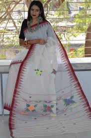

An eminent geographical indication, Moirang Phee saree find their home in the state of Manipur.
Moirang Phee is a textile fabric with a specific design called the "Moirang Pheejin". This design is woven sequentially on both longitudinal edges of the fabric and oriented towards the center of the cloth, with cotton or silk threads. The motifs are said to represent the thin and pointed teeth of Pakhangba, the pythonic god of Manipur mythology. The iconic motif is arranged in varying steps on the longitudinal border woven during the initial stage, has a sharp edge at the top, and is woven sequentially so as to give an aesthetic look.
Moirang phee sarees are made by hand in two stages using local fibers, plants, and bark. The fibers are spun into threads, dyed with plants and bark, and then starch made from rice is applied to size the yarn. The yarn is then stretched across with a bamboo rod and wound into bobbins. The fabric is woven using a loin loom or throw shuttle loom, with the throw shuttle loom being the most suitable.
